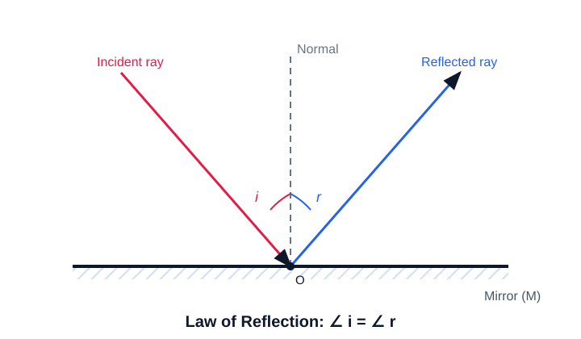
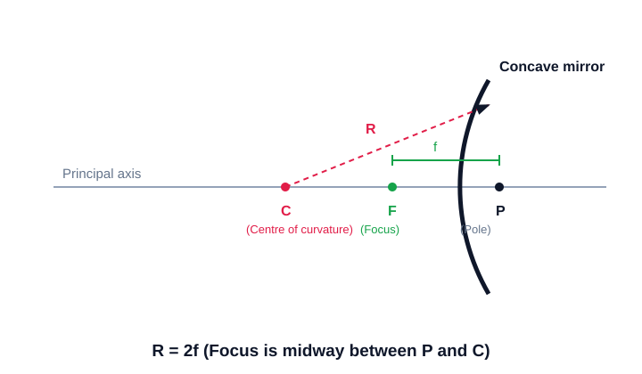

ਕੀ ਤੁਸੀਂ ਵੇਖਿਆ ਹੈ ਕਿ ਪਾਣੀ ਦੇ ਗਿਲਾਸ ਵਿੱਚ ਪਿਆ ਤੀਲਾ ਸਤ੍ਹਾ ਉੱਤੇ ਟੁੱਟਿਆ ਜਿਹਾ ਦਿਸਦਾ ਹੈ? ਅਸਲ ਵਿੱਚ ਤੀਲਾ ਨਹੀਂ ਮੁੜਦਾ, ਰੋਸ਼ਨੀ ਮੁੜਦੀ ਹੈ। ਜਦੋਂ ਰੋਸ਼ਨੀ ਹਵਾ ਤੋਂ ਪਾਣੀ ਜਾਂ ਕੱਚ ਵਿੱਚ ਜਾਂਦੀ ਹੈ ਤਾਂ ਹੌਲੀ ਹੋ ਕੇ ਦਿਸ਼ਾ ਬਦਲ ਲੈਂਦੀ ਹੈ; ਇਸ ਨੂੰ ਅਪਵਰਤਨ (refraction) ਕਹਿੰਦੇ ਹਨ। ਇਹੀ ਝੁਕਾਅ ਵੱਡਦਰਸ਼ੀ ਸ਼ੀਸ਼ੇ ਨੂੰ ਧੁੱਪ ਇੱਕ ਬਿੰਦੂ 'ਤੇ ਇਕੱਠੀ ਕਰਨ ਦਿੰਦਾ ਹੈ ਤੇ ਐਨਕ ਨੂੰ ਧੁੰਦਲੀ ਨਜ਼ਰ ਠੀਕ ਕਰਨ ਦਿੰਦਾ ਹੈ।
Have you noticed that a straw in a glass of water looks broken at the surface? The straw is not really bending — the light is. When light passes from air into water or glass it slows down and changes direction, an effect called refraction. This same bending lets a magnifying glass gather sunlight to a point and a spectacle lens correct blurry vision.
ਦਰਪਣ ਪਰਾਵਰਤਨ (reflection) ਰਾਹੀਂ ਕੰਮ ਕਰਦੇ ਹਨ — ਉਹ ਰੋਸ਼ਨੀ ਨੂੰ ਇੰਨੀ ਸਹੀ ਤਰ੍ਹਾਂ ਵਾਪਸ ਮੋੜਦੇ ਹਨ ਕਿ ਸਾਨੂੰ ਆਪਣਾ ਚਿਹਰਾ ਦਿਸਦਾ ਹੈ। ਸਮਤਲ ਦਰਪਣ ਸਿੱਧਾ ਬਿੰਬ ਬਣਾਉਂਦਾ ਹੈ, ਪਰ ਮੁੜੇ ਹੋਏ ਦਰਪਣ ਬਿੰਬ ਨੂੰ ਵੱਡਾ ਜਾਂ ਛੋਟਾ ਕਰ ਸਕਦੇ ਹਨ। ਅਵਤਲ (concave) ਦਰਪਣ ਰੋਸ਼ਨੀ ਇਕੱਠੀ ਕਰਦਾ ਹੈ, ਇਸ ਲਈ ਟਾਰਚ ਤੇ ਗੱਡੀ ਦੀਆਂ ਹੈੱਡਲਾਈਟਾਂ ਵਿੱਚ ਵਰਤਿਆ ਜਾਂਦਾ ਹੈ, ਜਦਕਿ ਉੱਤਲ (convex) ਦਰਪਣ ਵੱਡਾ ਖੇਤਰ ਦਿਖਾਉਂਦਾ ਹੈ, ਇਸ ਲਈ ਗੱਡੀ ਦੇ ਪਿਛਲੇ ਸ਼ੀਸ਼ੇ ਵਿੱਚ ਵਰਤਿਆ ਜਾਂਦਾ ਹੈ।
Mirrors work by reflection — they bounce light back so precisely that we see our own face. A plane mirror gives an upright image, but curved mirrors can enlarge or shrink it. A concave mirror gathers light, so it is used in torches and car headlights, while a convex mirror shows a wider view, which is why it is used as a vehicle's rear-view mirror.
ਕੱਚ ਤੇ ਧਾਤ ਨੂੰ ਧਿਆਨ ਨਾਲ ਢਾਲ ਕੇ ਮਨੁੱਖ ਨੇ ਰੋਸ਼ਨੀ ਨੂੰ ਕਾਬੂ ਕਰਨਾ ਸਿੱਖਿਆ। ਲੈੱਨਜ਼ ਦੀ ਸ਼ਕਤੀ ਦੱਸਦੀ ਹੈ ਕਿ ਇਹ ਰੋਸ਼ਨੀ ਨੂੰ ਕਿੰਨਾ ਮੋੜਦਾ ਹੈ ਤੇ ਇਸ ਨੂੰ ਡਾਇਓਪਟਰ ਵਿੱਚ ਮਾਪਿਆ ਜਾਂਦਾ ਹੈ। ਦੋ ਲੈੱਨਜ਼ਾਂ ਨੂੰ ਜੋੜ ਕੇ ਵਿਗਿਆਨੀਆਂ ਨੇ ਸੂਖ਼ਮਦਰਸ਼ੀ ਬਣਾਈ, ਜਿਸ ਨਾਲ ਬਿਮਾਰੀ ਫੈਲਾਉਣ ਵਾਲੇ ਕੀਟਾਣੂ ਵੇਖੇ ਗਏ, ਤੇ ਦੂਰਦਰਸ਼ੀ ਵੀ ਬਣਾਈ, ਜਿਸ ਨਾਲ ਦੂਰ ਦੀਆਂ ਆਕਾਸ਼ਗੰਗਾਵਾਂ ਵੇਖੀਆਂ ਗਈਆਂ। ਇੰਜ ਰੋਸ਼ਨੀ ਦੇ ਸਧਾਰਨ ਨਿਯਮਾਂ ਨੇ ਵਿਗਿਆਨ ਦੀ ਦੁਨੀਆਂ ਖੋਲ੍ਹ ਦਿੱਤੀ।
By carefully shaping glass and metal, humans learned to tame light. The power of a lens tells how strongly it bends light and is measured in dioptres. By combining lenses, scientists built the microscope to see disease-causing germs and the telescope to see distant galaxies. Thus the simple rules of light opened up the world of science.
When light bounces off a surface, it obeys two simple laws:

| Feature | Real Image | Virtual Image |
|---|---|---|
| Formed by | Rays actually meeting | Rays only appearing to meet |
| Can be on a screen? | Yes | No |
| Orientation | Always inverted | Always erect |
| Example | Cinema screen image | Plane-mirror image |
Before diving into curved mirrors, you must know the 4 absolute properties of a flat (plane) mirror image:
A spherical mirror is a piece of a hollow sphere. Concave reflects from the inside; Convex reflects from the outside.

| Term | Meaning |
|---|---|
| Pole (P) | Centre of the mirror surface |
| Centre of Curvature (C) | Centre of the sphere the mirror is part of |
| Radius of Curvature (R) | Distance P to C |
| Principal Focus (F) | Where parallel rays converge (or appear to) |
| Focal Length (f) | Distance P to F |
Use any TWO of these rays to locate the image in a spherical mirror:
| Object Position | Image Position | Size | Nature |
|---|---|---|---|
| At infinity | At F | Point-sized | Real, inverted |
| Beyond C | Between F and C | Diminished | Real, inverted |
| At C | At C | Same size | Real, inverted |
| Between C and F | Beyond C | Enlarged | Real, inverted |
| At F | At infinity | Very large | Real, inverted |
| Between P and F | Behind mirror | Enlarged | Virtual, erect |
Move the object through the five exam positions. Predict the image before reading the live result.
A convex mirror always forms a virtual, erect and diminished image, whatever the object position.
Click a use, then click the mirror that is used for it. (ਵਰਤੋਂ ਚੁਣੋ, ਫਿਰ ਸਹੀ ਦਰਪਣ 'ਤੇ ਕਲਿੱਕ ਕਰੋ।)
Interactive: Construct the mirror formula. Note the (+) sign!
An object is placed 15 cm in front of a concave mirror of focal length 10 cm. Find the image distance v.
Lenses use Refraction (bending through glass). You must draw these accurately in the board exam:
| Device | Typical Image Formed | Special Case / Rule |
|---|---|---|
| Concave Mirror | Real & Inverted | Virtual & Erect ONLY if object is very close (between P and F). |
| Convex Mirror | Always Virtual, Erect, Diminished | Used as rear-view mirrors (wider field of view). |
| Convex Lens | Real & Inverted | Virtual & Erect ONLY if object is very close (between O and F1). |
| Concave Lens | Always Virtual, Erect, Diminished | Similar to a Convex Mirror. |
Interactive: Construct the correct Lens Formula.
Magnification tells you the height of the image compared to the object. It reveals the exact nature of the image instantly.
When light passes from one medium into another, it bends according to two laws:
The refractive index compares the speed of light in two media.
The power (P) of a lens measures its ability to bend (converge/diverge) light.
Interactive Recall: Tap to reveal.
Match each device or term to its property. (ਹਰ ਉਪਕਰਨ ਨੂੰ ਹੁਣ ਮਿਲਾਓ।)
A student wrote the lens formula with the wrong sign. Tap the highlighted part to fix it.
Tap each card to reveal the image formed for that object position. (ਹਰ ਕਾਰਡ ਟੈਪ ਕਰਕੇ ਬਣਿਆ ਪ੍ਰਤੀਬਿੰਬ ਵੇਖੋ।)
Solve on paper, then check. Use the sign convention. (ਪਹਿਲਾਂ ਹੱਲ ਕਰੋ, ਫੇਰ ਜਾਂਚੋ।)